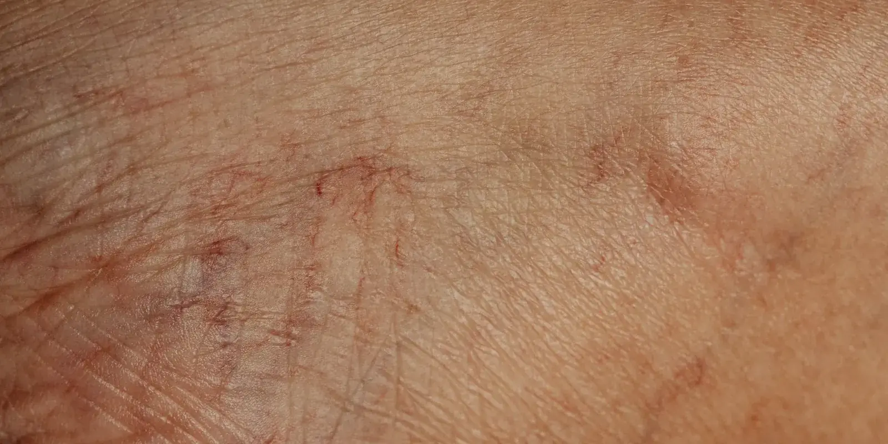

Escleroterapia con espuma: en qué se diferencia de la tradicional
Saliste del eco doppler en El Poblado con una palabra nueva en la cabeza: espuma. No es una inyección distinta a la escleroterapia que ya conoces: es la misma técnica preparada de otra forma, y esa preparación decide para qué vena sirve cada una.

Esa palabra, espuma, no es un tratamiento aparte. Es la misma escleroterapia que ya conoces, convertida en escleroterapia con espuma justo antes de inyectarla: el líquido esclerosante se mezcla con aire o con un gas hasta volverse espuma fina. En el consultorio de El Poblado, en Medellín, la reservamos sobre todo para várices medianas o grandes y para tramos de la vena safena; la líquida sigue siendo la primera opción para arañitas vasculares y venas muy finas.
Escleroterapia con espuma vs. líquida: la diferencia técnica
La diferencia no está en el esclerosante en sí, muchas veces es la misma sustancia (como la polidocanol o el tetradecil sulfato de sodio), sino en cómo se prepara antes de aplicarla. Para hacer la espuma, el especialista mezcla el líquido con aire o con un gas más fisiológico, como el CO2, usando dos jeringas conectadas por una llave de tres vías: es la técnica de Tessari, la más usada en el mundo para preparar microespuma. Pasa varias veces de una jeringa a otra hasta quedar fina y se inyecta recién hecha, porque las burbujas se deshacen rápido.
La escleroterapia líquida no necesita ese paso: se inyecta tal cual.
Esa espuma tiene además una ventaja práctica: se ve bien con el ultrasonido, porque las burbujas reflejan el sonido del eco doppler. Eso le permite al especialista seguir su recorrido dentro de la vena mientras la inyecta, algo mucho más difícil de ver con el líquido, que es transparente.
¿Para qué várices sirve la espuma y para cuáles la líquida?
La elección depende sobre todo del tamaño y la profundidad de la vena, no de una preferencia del especialista. Si quieres repasar cómo funciona la escleroterapia básica, está en ¿Duele la escleroterapia? Cómo funciona.
- Arañitas vasculares y venas muy finas: escleroterapia líquida.
- Várices medianas y grandes, más visibles bajo la piel: escleroterapia con espuma.
- Tramos de la vena safena identificados en el eco doppler: casi siempre espuma, guiada por ultrasonido.
Cuando el origen del problema está en la vena safena, el volumen de la espuma le permite ocupar y cerrar un tramo más largo con menos sesiones que si se usara líquido.
¿Es más efectiva la espuma que la escleroterapia líquida?
Algunos estudios muestran tasas de cierre más altas con espuma que con líquido en venas grandes, y algo menos de várices que vuelven a aparecer con el tiempo. Pero la certeza de esa evidencia es baja, según una revisión Cochrane sobre el tratamiento con inyecciones esclerosantes: los estudios disponibles son pequeños y los resultados varían de uno a otro. Lo que sí parece más claro es que, en venas pequeñas y arañitas, la espuma no aporta una ventaja frente al líquido, así que ahí sigue prefiriéndose la técnica tradicional.
Efectos secundarios: qué cambia con la espuma
Los efectos más comunes (moretones, enrojecimiento, pequeñas manchas oscuras en la piel) son parecidos entre las dos técnicas y, en general, leves y pasajeros. Lo que sí aparece con algo más de frecuencia después de la espuma son alteraciones visuales pasajeras, como ver destellos o líneas, y dolor de cabeza tipo migraña, sobre todo en personas que ya tienen antecedente de migraña. Suelen durar minutos y resolverse solas; por eso muchos especialistas prefieren usar un gas más fisiológico, como el CO2, en lugar de aire común, para reducir ese riesgo.
Cómo decidimos en Medellín entre espuma y líquida
En Seravena tenemos un criterio claro: no elegimos la técnica mirando la várice a simple vista. Antes de cualquier escleroterapia, con espuma o líquida, hacemos un eco doppler en el mismo consultorio de El Poblado para ver el tamaño real de la vena, si hay reflujo y de dónde viene.
Por fuera, dos várices del mismo tamaño pueden esconder venas muy distintas por debajo; por eso decide el eco doppler, no el ojo.
Ahí la espuma suele rendir mejor que el líquido. Si además de dudar entre espuma y líquida te preguntas si el láser es otra opción frente a cualquiera de las dos, lo comparamos aparte en escleroterapia vs láser para várices. Y si todavía no tienes claro qué tratamiento en general conviene para tus várices, nuestra guía de tratamiento de várices sin cirugía compara todas las opciones disponibles hoy en Colombia.
Antes de tu próxima cita, anota el tamaño aproximado de la vena que te preocupa y desde cuándo la notas más marcada. Con esa nota y el eco doppler, el especialista define en la misma consulta si te conviene espuma, líquida o una combinación de las dos. Puedes agendar esa valoración cuando quieras.
Preguntas frecuentes
¿Qué es la escleroterapia con espuma?
Es la misma escleroterapia de siempre, pero el líquido esclerosante se mezcla con aire o con un gas antes de inyectarlo, formando una microespuma. Esa espuma ocupa más espacio dentro de la vena y se ve mejor con el ultrasonido, por eso suele usarse guiada por eco doppler en várices más grandes.
¿En qué se diferencia la escleroterapia con espuma de la líquida tradicional?
La diferencia está en la preparación y en el tipo de vena para la que se usa cada una. La líquida se inyecta tal cual y funciona bien en arañitas y venas muy finas; la espuma se prepara justo antes de la inyección, con la técnica de Tessari, y se reserva para várices medianas o grandes, incluidos tramos de la vena safena.
¿La escleroterapia con espuma duele más que la líquida?
En general la molestia es parecida: un ardor o pinchazo breve en el momento de la inyección. Algunos estudios reportan algo más de dolor con la espuma, pero la diferencia no es grande y varía mucho de una persona a otra.
¿La espuma esclerosante tiene más riesgos que la líquida?
Los efectos más comunes, como moretones, enrojecimiento o manchas en la piel, son parecidos en ambas técnicas. La espuma se asocia, en algunos estudios, a más casos de alteraciones visuales pasajeras o dolor de cabeza tipo migraña justo después de la sesión; suelen durar minutos y resolverse solas, pero deben avisarse siempre al especialista.